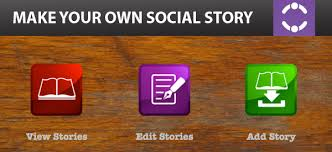

ABOUT
From Kumbakonam
DESIGNATION
Student - Studying information techonolgy at Thaigarajar college of engineering
MINI PROJECT
-

Develop a website for Autism childern
A website for Autism children that's help them to improve their pronounciation,memory power,Interest etc. For exampale,In the website we give some interesting games link and I design a wep page that help the staff to post quiz or any activity like that
-
Automatic irrigation system
I have use ardiuno and some sensor to do this work.sensors like moisture sensor,water level sensor etc. In that,I check the moisture content of the soil,if the level is below the some thershold value then the motor will automaticall starts and stop.
-
alumni management system
I design a website for alumni.It's help the syudent to interact with alumni and also helps alumni to know all tha current detail about activity and events in college